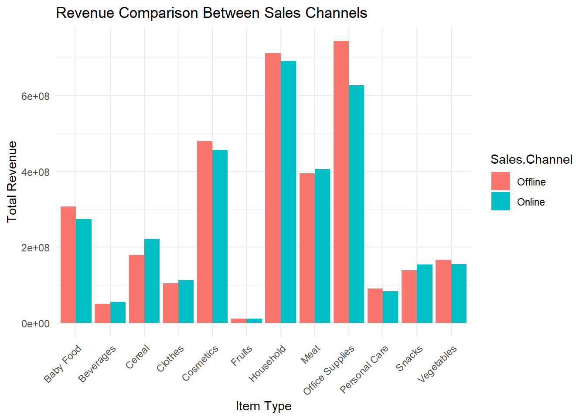
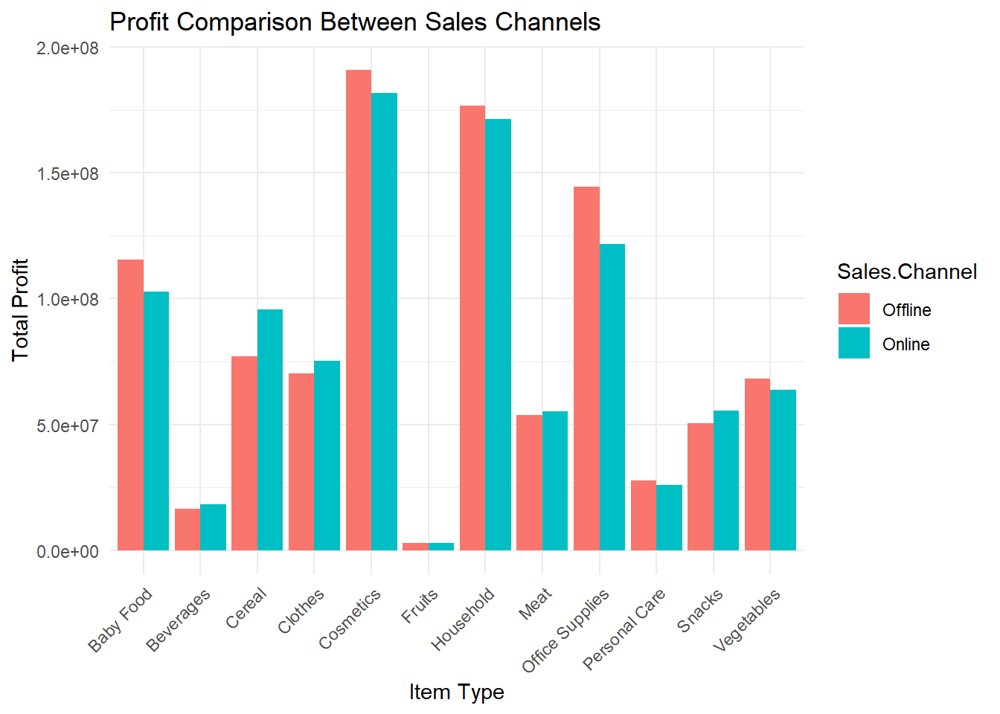
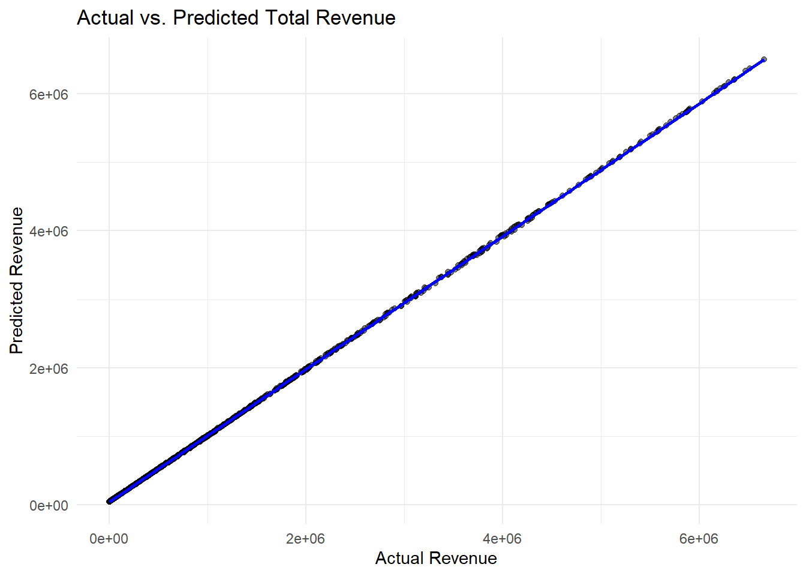

| Region | Country | Item.Type | Sales.Channel | Order.Priority | Order.Date | Order.ID | Ship.Date | Units.Sold | Unit.Price | Unit.Cost | Total.Revenue | Total.Cost | Total.Profit |
|---|---|---|---|---|---|---|---|---|---|---|---|---|---|
| Central America and the Caribbean | Antigua and Barbuda | Baby Food | Online | M | 12/20/2013 | 957081544 | 1/11/2014 | 552 | 255.28 | 159.42 | 140914.6 | 87999.84 | 52914.72 |
| Central America and the Caribbean | Panama | Snacks | Offline | C | 7/5/2010 | 301644504 | 7/26/2010 | 2167 | 152.58 | 97.44 | 330640.9 | 211152.48 | 119488.38 |
| Europe | Czech Republic | Beverages | Offline | C | 9/12/2011 | 478051030 | 9/29/2011 | 4778 | 47.45 | 31.79 | 226716.1 | 151892.62 | 74823.48 |
| Asia | North Korea | Cereal | Offline | L | 5/13/2010 | 892599952 | 6/15/2010 | 9016 | 205.70 | 117.11 | 1854591.2 | 1055863.76 | 798727.44 |
| Asia | Sri Lanka | Snacks | Offline | C | 7/20/2015 | 571902596 | 7/27/2015 | 7542 | 152.58 | 97.44 | 1150758.4 | 734892.48 | 415865.88 |
Sales_website

Introduction
Sales insight plays a crucial role in empowering sales teams, sales managers, and business leaders to make informed decisions, adapt to market dynamics, and drive revenue growth. It often involves the use of data analytics, business intelligence tools, and CRM (Customer Relationship Management) systems to collect, analyze, and visualize sales data effectively.
Dataset
Source: https://data.world/bobmajor/sales
The dataset, sourced from data.world, provides a comprehensive overview of sales transactions, consisting of regions, countries, and product types. It includes vital information such as sales channels, order priorities, dates, IDs, and financial details, enabling analysis of sales performance, market trends comprehension, and business strategy optimization. Key columns include region, country, item type, sales channel, order priority, order and ship dates, order ID, units sold, unit price, unit cost, total revenue, total cost, and total profit. This dataset is invaluable for evaluating efficiency, profit margins, and forecasting future trends, facilitating informed decision-making. data.world, a renowned platform for diverse datasets, serves as the dataset’s source, offering a rich resource for data exploration and analysis.
.
.
Research Questions
.
Research Question 1:
.
Is there a significant difference in sales performance (revenue and profit) between online and offline sales channels, and how does this vary across item types?
As per the analysis, When we compared the total revenue from online and offline sales channels, we found that there wasn’t a big difference between them. Basically, the money coming in from both channels was pretty similar. So, whether people were buying stuff online or in person, it didn’t affect the total revenue much.

Welch Two Sample t-test
data: Total.Revenue by Sales.Channel
t = 0.11028, df = 21.766, p-value = 0.9132
alternative hypothesis: true difference in means between group Offline and group Online is not equal to 0
95 percent confidence interval:
-191347022 212825215
sample estimates:
mean in group Offline mean in group Online
281564932 270825835 similarly, when we look at the total profit, there wasn’t a significant gap between online and offline sales. The money made from both channels was almost the same. So, in terms of making money, it didn’t really matter whether customers were buying online or in a physical store.

Welch Two Sample t-test
data: Total.Profit by Sales.Channel
t = 0.08289, df = 21.864, p-value = 0.9347
alternative hypothesis: true difference in means between group Offline and group Online is not equal to 0
95 percent confidence interval:
-48050538 52049997
sample estimates:
mean in group Offline mean in group Online
82800833 80801103 Outcomes:
Marketing and Sales Strategy: Since there isn’t a big difference in revenue and profit between online and offline sales, the company doesn’t have to worry too much about favoring one channel over the other just because of money. Instead, they can think about other things like which channel reaches more customers or is more convenient for them.
Channel Investment: The company can invest in both online and offline channels equally since they both bring in similar profits. This way, they can have a strong presence in both areas and cater to different customer preferences.
Further Analysis: To fine-tune their strategy even more, the company can look into things like who’s buying their products, how much they’re spending, and where they’re located. This info could help them figure out if certain products do better in specific channels or regions, which could be useful for targeted marketing.
.
Research Question 2:
.
Does market penetration (measured by the number of units sold) differ significantly across product categories in different regions?
We performed an ANOVA test to compare the average units sold across different product categories and regions. This can help determine if some regions or product types perform significantly better than others.
.
.
The interpretations for each graph based on the average units sold across different regions for various product categories:
- Beverages:
- Asia and Australia and Oceania lead in sales, suggesting high demand or effective distribution networks in these regions.
- Sales in North America and Sub-Saharan Africa are significantly lower, indicating either less preference for beverages or less effective market penetration in these regions.
- Cereal:
- Asia again shows strong sales, consistent with a large consumer base or cultural preferences for cereal products.
- North America and Sub-Saharan Africa have the lowest sales, which might reflect cultural dietary preferences or competitive market conditions.
- Clothes:
- High sales in Asia and Europe indicate robust markets for clothing, likely driven by fashion industries and large urban populations.
- Sub-Saharan Africa has the least sales, which may reflect economic factors or different clothing needs and preferences.
- Cosmetics:
- Asia and Australia and Oceania have very high sales, likely due to strong beauty industry presence and consumer interest in personal care.
- Middle East and North Africa show lower sales, possibly due to cultural norms or market saturation with local brands.
- Fruits:
- Asia leads significantly, which might be due to local availability and a cultural preference for fresh fruits.
- North America shows comparatively lower sales, possibly due to import costs or preference for processed foods.
- Household:
- High sales in Asia suggest a large market for household items, supported by urban development and population density.
- Lower sales in Sub-Saharan Africa might be influenced by lower urbanization rates and different living standards.
- Meat:
- Asia and Australia and Oceania are top sellers, indicating strong meat consumption patterns possibly driven by both local production and imports.
- Sales are low in North America, which might be surprising and could indicate regional preferences for specific types of meat or competition from other protein sources.
- Office Supplies:
- Asia shows the highest sales, reflecting its role as a major hub for both manufacturing and consumption of office-related products.
- Sub-Saharan Africa has the lowest sales, which could be related to fewer formal business environments or lower economic activities involving office settings.
- Personal Care:
- Similar to cosmetics, Asia and Australia and Oceania have high sales, emphasizing strong markets for personal care products.
- Lower sales in Sub-Saharan Africa could be due to economic limitations or different consumer priorities.
- Snacks:
- High sales in Asia indicate a strong snack culture or effective distribution.
- North America has surprisingly low sales which could suggest dietary trends or competitive markets with diverse food options.
- Vegetables:
- Asia leads, likely due to dietary habits and the prevalence of vegetables in local cuisines.
- Sub-Saharan Africa shows low sales, potentially due to agricultural practices focusing on subsistence rather than commercial vegetable farming.
Df Sum Sq Mean Sq F value Pr(>F)
Item.Type 11 8.553e+07 7775845 0.917 0.523
Region 6 6.221e+07 10368694 1.222 0.291
Item.Type:Region 66 6.088e+08 9223637 1.087 0.295
Residuals 4916 4.171e+10 8483930 Degrees of Freedom (Df):
Item Type: There are 11 different categories of items.
Region: There are 6 regions.
Item Type by Region: There are 66 combinations of item types and regions considered.
Residuals: There are 4916 leftovers, basically the stuff the model couldn’t explain.
Sum of Squares (Sum Sq) and Mean Squares (Mean Sq):
This shows how much each factor and their combos contribute to the differences in sales.
Item Type: The variation in sales due to different item types is around 85.53 million.
Region: Differences between regions contribute about 62.21 million to sales variation.
Item Type by Region: The combo of item type and region contributes about 608.8 million to the sales variation, showing that it matters which item is sold where.
F-value:
These numbers compare the impact of each factor on sales.
The F-values are low (0.917 for item type, 1.222 for region, and 1.087 for their interaction), meaning neither item types, regions, nor their combos strongly affect sales on their own.
P-value (Pr(>F)):
Item Type (0.523), Region (0.291), and Item Type by Region (0.295): All these numbers are higher than 0.05, meaning there’s no significant difference in sales averages across different item types, regions, or their combos. So, we can’t say there’s a real difference.
Conclusion
Overall, the analysis indicates a uniformity in sales performance across different regions and item types, suggesting the need for a broader strategy that transcends regional and item-based differences, or a deeper dive into other factors influencing sales.
Research Question 3:
.
predict the total sales (Total Revenue) based on features like Country, Item Type, Sales Channel, Order Priority, etc. This could help in forecasting future sales and optimizing inventory and marketing strategies.
.
Region Country
Asia : 719 Andorra : 40
Australia and Oceania : 416 San Marino : 40
Central America and the Caribbean: 534 Ghana : 38
Europe :1330 Mauritius : 38
Middle East and North Africa : 610 United States of America: 38
North America : 106 Tonga : 37
Sub-Saharan Africa :1285 (Other) :4769
Item.Type Sales.Channel Order.Priority Order.Date
Beverages : 447 Offline:2504 C:1174 2/13/2011: 7
Fruits : 447 Online :2496 H:1278 6/26/2010: 7
Baby Food : 445 L:1227 1/16/2016: 6
Cosmetics : 424 M:1321 1/18/2010: 6
Household : 424 1/26/2014: 6
Office Supplies: 420 1/27/2012: 6
(Other) :2393 (Other) :4962
Order.ID Ship.Date Units.Sold Unit.Price
Min. :100090873 10/21/2011: 7 Min. : 2 Min. : 9.33
1st Qu.:320104217 3/15/2010 : 7 1st Qu.:2453 1st Qu.: 81.73
Median :552314960 6/12/2016 : 7 Median :5123 Median :154.06
Mean :548644737 7/28/2014 : 7 Mean :5031 Mean :265.75
3rd Qu.:768770944 10/2/2010 : 6 3rd Qu.:7576 3rd Qu.:437.20
Max. :999879729 10/24/2011: 6 Max. :9999 Max. :668.27
(Other) :4960
Unit.Cost Total.Revenue Total.Cost Total.Profit
Min. : 6.92 Min. : 65 Min. : 48 Min. : 16.9
1st Qu.: 35.84 1st Qu.: 257417 1st Qu.: 154748 1st Qu.: 85339.3
Median : 97.44 Median : 779409 Median : 468181 Median : 279095.2
Mean :187.49 Mean :1325738 Mean : 933093 Mean : 392644.6
3rd Qu.:263.33 3rd Qu.:1839975 3rd Qu.:1189578 3rd Qu.: 565106.4
Max. :524.96 Max. :6672676 Max. :5248025 Max. :1726007.5
Number of rows before cleaning: 5000 Number of rows after cleaning: 5000 Lasso Model Results: RMSE = 45226.41 R-squared = 0.999972 
.
Detailed Interpretation of Predictive Analysis for Total Sales Revenue
Research Context and Objective
The aim of this analysis is to predict total sales revenue using key features such as Country, Item Type, Sales Channel, and Order Priority. Such predictive modeling is crucial for businesses to forecast future sales accurately, which in turn assists in making informed decisions regarding inventory management and marketing strategies.
Data Preparation and Analysis Methodology
The data, sourced from the “5000 Sales Records.csv”, underwent several preprocessing steps:
1. Data Cleaning: Rows with missing values were identified and removed to ensure the quality and accuracy of the analysis.
2. Feature Engineering: Less frequent countries were categorized under ‘Other’ to streamline the analysis. Additionally, categorical variables such as Country, Item Type, Sales Channel, and Order Priority were appropriately encoded to facilitate their use in modeling.
3. Model Development: A Lasso Regression Model was employed due to its efficacy in feature selection and handling multicollinearity by shrinking coefficients of less important features to zero.
Predictive Modeling Process
- Training and Testing Data Split: The dataset was divided into training (80%) and testing (20%) sets to validate the model’s performance.
- Model Training: The Lasso model was trained using the training set, with cross-validation to optimize the lambda parameter, minimizing overfitting and enhancing model generalizability.
- Model Prediction and Evaluation: The trained model was used to predict the total revenue on the testing set. Model performance was quantitatively assessed using Root Mean Squared Error (RMSE) and R-squared metrics, which provide insights into the accuracy and variability explained by the model.
Results
- Model Performance:
- RMSE: 45,226.41 - Indicates the average deviation of predicted revenues from actual revenues. A lower RMSE signifies better predictive accuracy.
- R-squared: 0.999972 - Reflects that the model explains almost all the variability in the revenue data, indicating a highly accurate model.
Visualization
The scatter plot titled “Actual vs. Predicted Total Revenue” visually compares the predicted values against the actual values, with a linear fit line indicating the prediction accuracy across different revenue scales. The tight alignment of data points along the 45-degree line suggests that the model predictions closely match the actual outcomes.
Professional Insights
- High Model Accuracy: The near-perfect R-squared value suggests that the model is highly effective in predicting total revenue based on the features used. This level of accuracy is promising for deploying the model in real-world scenarios.
- Utility in Strategic Decision-Making: The ability to predict revenue accurately provides businesses with a strategic advantage in managing resources, planning inventory, and crafting targeted marketing strategies based on predicted sales trends.
- Recommendation for Further Research: To enhance the model, additional variables such as economic indicators, market trends, and consumer behavior metrics could be incorporated. Furthermore, experimenting with other predictive models like Random Forest or Gradient Boosting might yield insights into the robustness of the predictive accuracy across different algorithms.
Conclusion
This analysis successfully demonstrates the use of Lasso Regression in predicting total sales revenue, highlighting its practical applications in strategic business planning and decision-making. The methodology and insights derived from this study could serve as a blueprint for similar predictive analytics tasks within different organizational contexts.